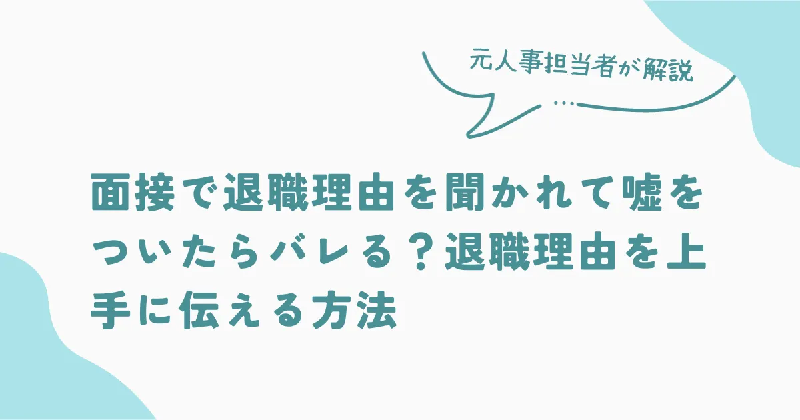
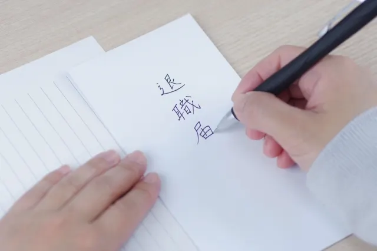
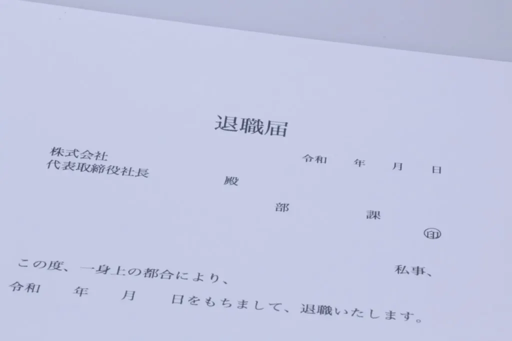
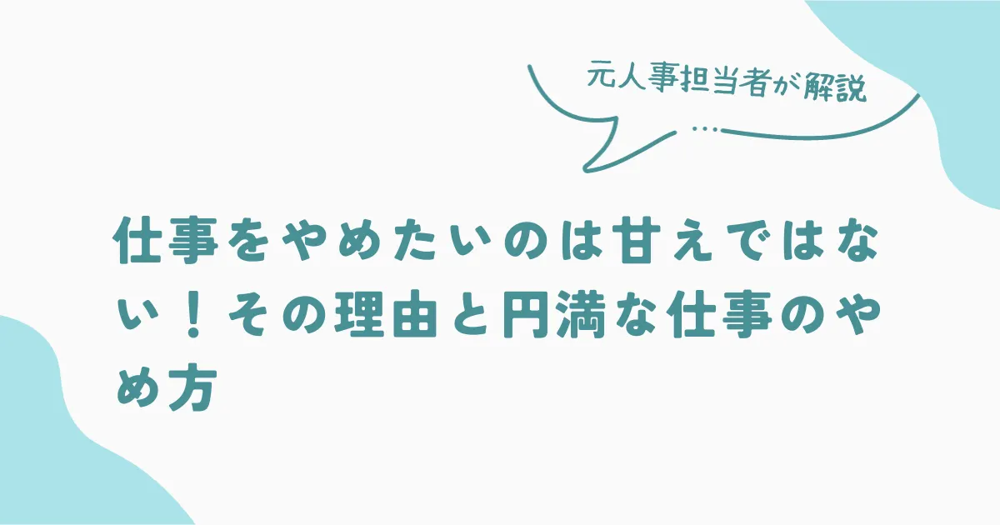

面接で退職理由を聞かれて嘘をついたらバレる？退職理由を上手に伝える方法


このような人におすすめ
- 退職理由で本当の理由を伝えるのが不安
- 退職理由をうまく伝えられない
- 面接で好印象を与えたい
面接では必ずと言っていいほど「退職理由」を聞かれます。「本当の理由はあるけど、言わない方がいいだろう」と思う人もいるのではないでしょうか。たしかに、面接でネガティブな理由を伝えると印象が悪くなりそうで不安ですね。
しかし、面接での嘘は見抜かれている場合がほとんどです。
この記事では、これまで30年に渡り人事担当として300人以上の面接を行ってきた筆者が、自らの経験をもとに「面接で嘘をつかないほうがいい理由」を解説します。本当の退職理由を上手に伝える方法も紹介するので、転職活動の参考にしてください。
面接で退職理由を聞くのはなぜ？
面接で前職の退職理由を聞く理由は以下の3つを知りたいからです。
- 前職と同じ理由で辞めないかを確認したい
- 応募者の人間性を知るため
- 答えづらい質問にも誠実に答えられるかを確認するため
ひとつずつより詳しく解説しますので、面接官の意図に沿った回答にするための参考にしてください。
前職と同じ理由で辞めないかを確認したい
どのような理由で退職したのか確認することで、応募者が「また同じ理由で辞めないか」を確認したい意図があります。たとえば、退職理由が「家族との時間を大事にしたい」という理由だったとしましょう。しかし、応募した企業が土日祝日は休めない業種だと家族との時間が取りにくいので、また退職するのではないかと思われる可能性があります。
一般的に、やむを得ない事情であったとしても「一度退職した人は、また退職するのではないか」と思われることが少なくありません。このような印象を持たれないためにも「また同じ理由で退職することはないだろう」と面接官が納得できる理由である必要があります。
応募者の人間性を知るため
面接官は退職理由を聞くことで、応募者の仕事に対する考え方や価値観を推測します。退職理由を通じて、あなたの考え方が自社にマッチしているかや、活躍してくれそうかなどを判断するのです。
筆者の場合は「退職に至るまでの不満や不安を解決する努力をしたか」という質問もします。
質問への答え方で「すぐにあきらめる性格ではないか」や「改善提案ができる人材か」の判断ができます。改善点の提案や、自ら適応しようと努力するという力は、社会人として求められる重要なスキルです。そのため、退職理由が不平不満ばかりで、自ら動こうとしていないようであれば採用を見送るケースも多くあります。
答えづらい質問にも誠実に答えられるかを確認するため
退職した理由は、多くの人にとって答えづらい質問ではないでしょうか。だからこそ、あえて質問するのです。ビジネスにおいては、先方にとって不利になる部分も伝えなければなりません。不利な事実を共有することで、問題や誤解の深刻化を防ぐなど、誠実な姿勢と透明性は信頼関係を築くために不可欠な要素です。
一度信用を失うと、再び信頼を築くことは難しいでしょう。
逆に、不利な情報を率直に共有することで、信用を維持し信頼されるビジネスパートナーとなる可能性もあります。このような場面を想定して、答えづらい質問に対して誠実にしっかりと答えられるスキルがあるかどうか確認する意図もあるのです。
退職理由の嘘は見抜かれている
採用担当者は多くの面接経験から、嘘を見抜くことが得意です。転職理由で嘘をつくと面接官の印象は悪くなり、採用につながることは少ないので嘘をつくことはやめましょう。
面接官が嘘を見抜くポイントは次の3つです。
- 口調や仕草でわかる
- 話に一貫性がない
- 明らかにバレる嘘をつく
順番に解説します。
口調や仕草でわかる
人は嘘をついたり誤魔化したりすると、顔の表情や口調に現れます。面接官はこれまでに多くの人と面接してきているため、少しの違いでも気づくでしょう。面接官が「この退職理由は本当かな？」と疑問に思った時点でマイナスです。
逆に言うと、嘘をついていなくても「嘘をついている可能性がある」と思われただけで不採用となります。
話に一貫性がない
口調や仕草はごまかせても、面接官のさまざまな質問に対して「辻褄を合わせられなくなる」ケースは少なくありません。たとえば、実際には給料に不満があって退職した場合「志望動機や入社したらやりたいこと」などを聞かれた時に明確な理由を答えられない場合が多くあります。
中途採用は新卒とは異なり、インターンなどがないため志望動機はとても重要です。志望動機が曖昧であれば、入社後のミスマッチにつながることが多いからです。したがって、質問をされた時に「話の一貫性」がないと確実に不採用となるでしょう。
面接官はさまざまな質問を通して嘘を見抜こうとしています。
明らかにバレる嘘をつく
意外に多いのは嘘をつくパターンです。「絶対にわからないだろう」と思ってついた嘘でも、入社手続きなどで嘘が判明することがあります。たとえば、本当の退職理由は「解雇」だったのに「自己都合退職」だと嘘をついても雇用保険手続きの際にバレるのです。
企業によっては、前職で勤務していた会社に確認したり、調査会社に依頼したりして人物調査をするケースもあります。特に中途採用の場合は、応募者の過去について情報がないため、信用調査をおこなう企業も少なくありません。
悪質な場合は訴えられる可能性もあるので正直に答えましょう
面接で嘘はつかずに退職理由を伝える方法

面接で嘘をつくことはNGですが、退職理由を正直に伝えると印象が悪くなることがあります。したがって、好印象を与えるように本当の理由を伝えるのがポイントです。次の3つに気をつけましょう。
- 前向きな表現にする
- 退職理由と志望動機に一貫性を持たせる
- ネガティブな理由をそのまま伝える
詳しく解説するので、ぜひ実践してみてください
前向きな表現にする
退職理由はネガティブな理由でも構いません。大事なのはポジティブな表現にすることです。たとえば次のような答え方をしてみましょう。
『前職での給与には正直、満足していませんでした。私は給与だけでなく、自身のスキルや貢献度も同時に上げていこうと考えています。
貴社ではスキルアップ研修が充実していると聞いていますので、制度を利用してスキルアップしたいと思い応募させていただきました』
このように、正直に伝えた上で前向きな発言に変換すると好印象です。
退職理由と志望動機に一貫性を持たせる
前章でも解説しましたが、退職理由と志望動機が結びついていなければ説得力がありません。具体的には、次のような感じです。
- 退職理由：前職ではやりたいことが叶えられなかったため、次の会社で叶えたいと思った。
- 志望動機：応募先の企業では前職で叶えられなかったことができるから志望した。
ポイントは「前職ではどうしてもできないことを実現するために、退職せざるを得なかった」と思ってもらえることです。退職と志望動機の話に一貫性が出ると、退職理由に納得してもらいやすくなり、前向きな志望動機となるため、好印象になります。
ネガティブな理由をそのまま伝える
場合によってはそのまま伝えた方が良いケースもあります。例としては次のような理由です。これらは、社会的問題にもなっているので「転職せざるを得ない環境」だと理解してもらえます。
- 上司からのパワハラ
- 残業や休日出勤が多い
- 給与や残業代の未払い
上記のような理由は、正直に伝えても問題ありません。
ただし、全て会社が悪いと思わせるような伝え方はマイナスになります。好印象を与えるためには「自分も我慢が足りなかった」や「もっと改善努力をすればよかった」など、自分にも反省すべき点があると言う言葉を付け加えましょう。
面接で嘘をつくことのリスク
「内定をもらうために、その場だけ乗り切りたい」と言う気持ちで嘘をついたことがバレると、代表的な3つのリスクを紹介します。覚えておきましょう。
- 内定取り消し
- 試用期間中の解雇
- 入社後に働きづらくなる
一度ついた嘘は取り消せないので、しっかり心に留めておいてください。
内定取り消し
内定をもらった後に嘘が発覚した場合、内定の取り消しになることがあります。たとえば、入社書類として「卒業証明書」の提出や「資格取得の証明」を求められるケースもあります。しかし、嘘をついていれば証明できません。特に、履歴書や職務経歴などの嘘は、重大な経歴詐称と見なされる可能性が高いでしょう。
ここで嘘がバレるのです。
試用期間中の解雇
多くの場合、入社後数ヶ月の「試用期間」を設けています。試用期間は、あなたを正式に採用しても問題ないかを見極める期間です。法律によって、使用期間中の解雇について以下のように定められています。
採用決定の時点で知ることができず、また知ることが期待できないような事実が判明し、その労働者を引き続き雇用するのが適当でないと客観的に認められる場合。（参考：労働契約法 | e-Gov法令検索）
労働契約法 | e-Gov法令検索
つまり、面接の時に企業が「求めるスキルや経験があること」を条件に採用したが、本当にできるのかわからないため、使用期間に確かめるのです。期間に求められる業務をこなせないことがわかれば、最悪の場合「解雇」となります。
入社後に働きづらくなる
採用に時間や費用を費やしているため、仮に嘘がバレてしまった場合でも「きちんと仕事をしてくれるなら構わない」と入社させてくれる企業もあります。しかし、当然人事担当は嘘をついて入社したことを知っているため、昇進や昇格に影響が出る可能性もあるでしょう。
また、同僚や上司に嘘をついて入社したことがバレないとも限りません。仮にバレてしまった場合、社内での信用を失い仕事がしづらくなります。
面接で言わないほうがいい退職理由
面接では聞かれたことに対して、印象が悪くならないような伝え方で簡潔に答えなければなりません。しかし、印象を悪くしたくないがために、自分が悪くないことを主張することは逆にマイナスになります。以下3つは面接では絶対に言わないように気をつけましょう。
- 前職の愚痴
- 自分の意見ばかりを主張する
- 人間関係の理由をそのまま話す
理由をひとつずつ解説します。
前職の愚痴
たとえ前職の上司や待遇に不満があったとしても、愚痴を言うのはやめましょう。退職理由として、会社に対しての不満を伝えると「他人のせいにする人」という印象を与えます。また、面接で上司の愚痴を言うと「平気で他人の悪口を言う人」と思われがちです。
会社への不満が退職理由の場合は、ポジティブな理由に変換した上で、自分にも足りない部分があったと言う言い方にしましょう。
自分の意見ばかりを主張する
会社では自分の思い通りにいかないことも多くあります。自分の意見ばかり主張するのではなく、他人の意見を受け入れることも重要です。自分の主張ばかりする人は協調性がないと捉えられてしまいます。たとえ自分の思い通りにならず退職に至ったとしても「良い経験をさせてもらった」と謙虚な気持ちで受け止めることが重要です。
協調性はすごく大事です
人間関係の理由をそのまま話す
周囲との人間関係が理由で退職した人も多いでしょう。しかし、単に人間関係が良くなかったことだけをアピールすると、協調性のなさや改善努力をしていないと捉えられることもあります。ただ「パワハラ」など社会通念上、誰にでも納得できる理由であれば問題ありません。
人間関係が理由の場合はそのまま率直に伝えるよりも、ポジティブな視点で伝えることが重要です。たとえば、次のように言い換えると良いでしょう。
「前職では自分の努力が足らなかったこともあり、コミュニケーションが難しかったことから、より成長できる環境で新しいチャレンジを求めています」
このように、ネガティブなイメージを与えないように、自分の成長意欲やポジティブなアピールが重要です。
まとめ〜退職理由は嘘をつかずに前向きに話すことが大切
面接でネガティブな退職理由を伝えたくないために嘘をつくことは「リスク」があります。面接官は嘘を見抜く力を持っている場合が多く、嘘がバレた場合は「内定取り消し」や「解雇」される可能性もあります。退職理由は嘘をつかず「前向きな理由に変換した上で、志望動機と一貫性を持たせる」ことが重要です。
本記事を参考に面接官が退職理由を聞く意図を汲み取り、ネガティブに変換して面接官に好印象を与えて内定につなげげましょう。円満な退職方法については以下の記事で紹介していますので参考にしてください。

採用・人事やAI活用のご相談を受け付けています
記事の執筆、採用支援、AI導入支援など、まずはお気軽にご相談ください。
ご相談はこちら